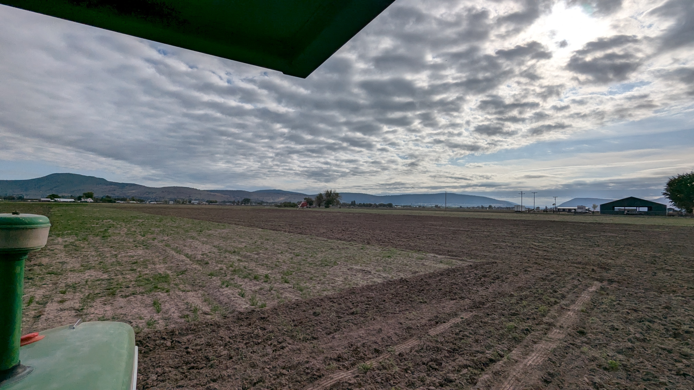
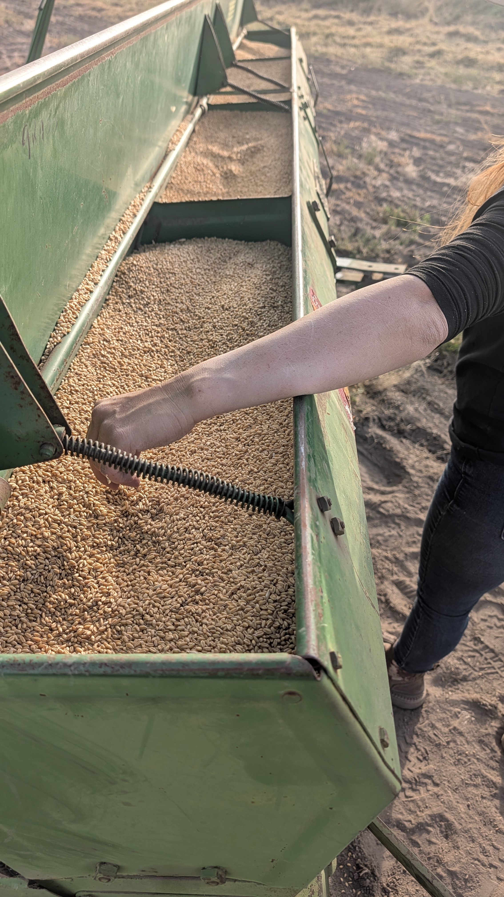

Built from the ground up
In 2022, my wife Sara and I purchased 34.75 acres in Klamath Falls, Oregon — raw land that had sat fallow for years with zero infrastructure. No irrigation. No equipment. Just open sky, volcanic soil, and a lot of potential.
What drew us here wasn't just the land — it was the idea of building something real. Something our family could work with their hands, watch grow season by season, and pass down. We relocated from Portland, put down roots in Southern Oregon, and got to work.
Over the last three years we have poured sweat and personal finances into the property. We now own a full irrigation system and farming equipment, and are in our second year growing winter wheat — baled as small bales for local livestock feed.
After this season we plan to transition acreage into alfalfa, with a portion reserved for future cattle grazing. Our mission stays constant: growing quality livestock feed — wheat, alfalfa, and eventually garlic — for the Southern Oregon agricultural community.

Sara walking the property on day one — October 2022

